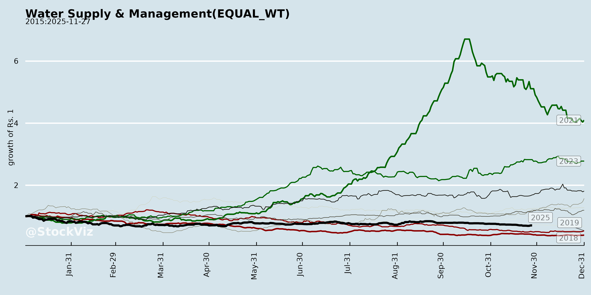
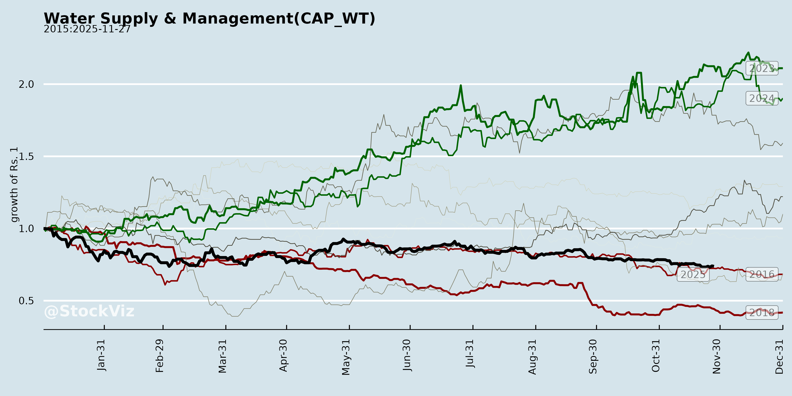
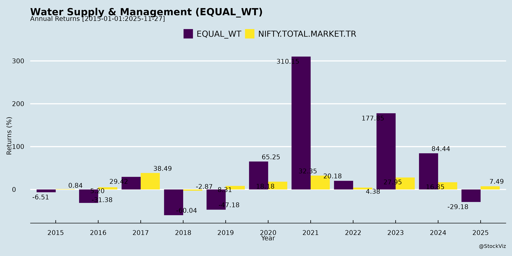
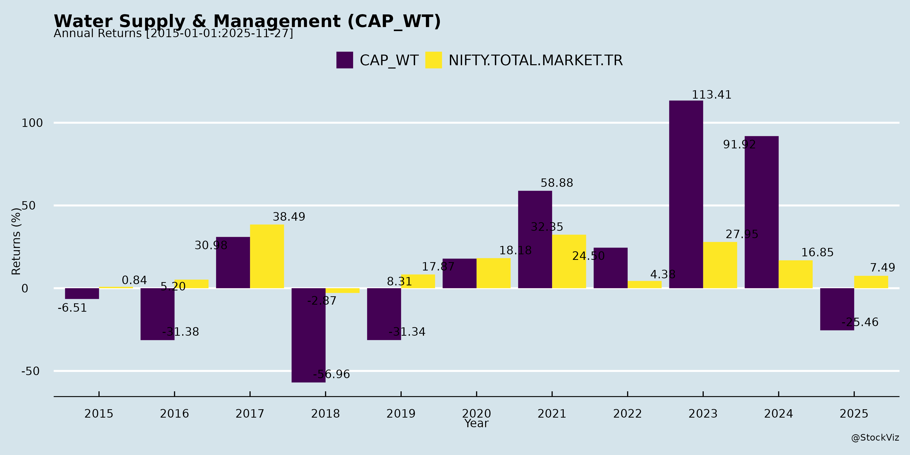
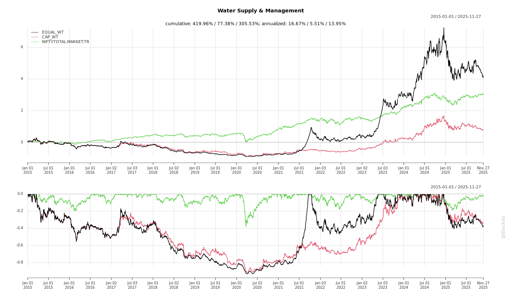
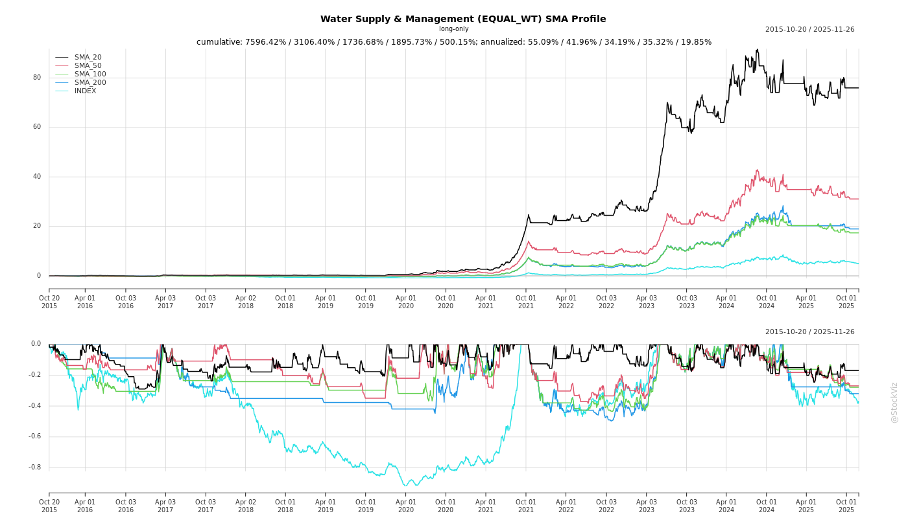
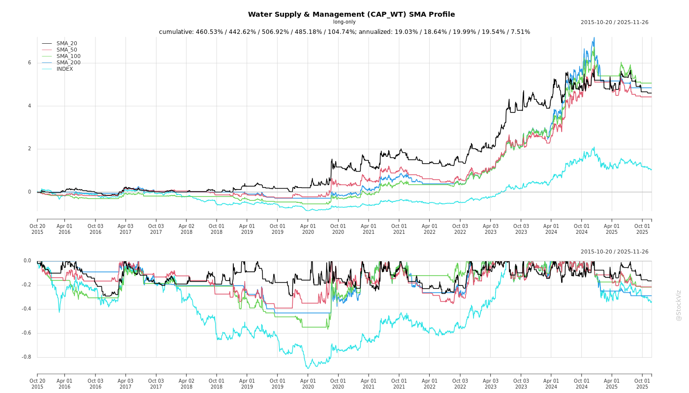
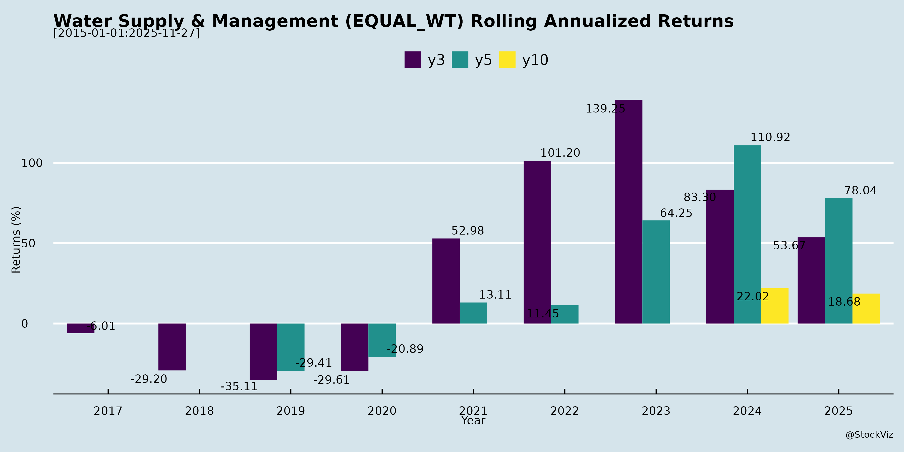
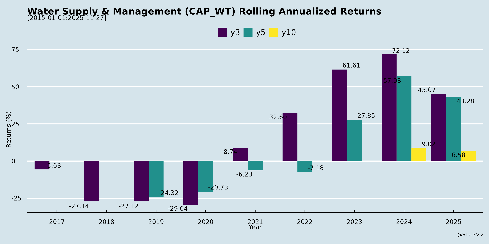

Annual Returns




Cumulative Returns and Drawdowns

SMA Scenarios


Current Distance from SMA
Rolling Returns


EBIT (% of Industry Total)
Revenue (% of Industry Total)
Analysis of Indian Water Supply & Management Sector
The Indian Water Supply & Management sector, encompassing EPC, O&M, treatment plants (STP, WTP, desalination), groundwater recharge, zero liquid discharge (ZLD), and emerging areas like ultra-pure water for solar/semiconductors/data centers/CBG, is witnessing robust momentum. Insights from Q2/H1 FY26 earnings calls of key players—Denta Water & Infra Solutions, Enviro Infra Engineers, Ion Exchange, and VA Tech Wabag—highlight a sector fueled by government initiatives but facing execution and competitive pressures. Below is a structured summary of headwinds, tailwinds, growth prospects, and key risks.
Tailwinds (Positive Drivers)
- Government Schemes & Policy Support: Strong backing from Jal Jeevan Mission, AMRUT, Swachh Bharat, Atal Jal, SATAT (CBG), and PLI schemes. Funds are timely for approved projects (40-60% central contribution). One City One Operator (OCOO) model gaining traction (e.g., Agra, Ghaziabad).
- High Demand & Order Pipelines: Order books robust (Denta: ₹7,347 Cr; Enviro: >₹2,000 Cr; Ion: ₹2,711 Cr; Wabag: ₹16,000 Cr). Bids pipelines massive (Enviro: ₹8,000 Cr; Ion: ₹9,000 Cr; Wabag: Preferred L1 for ₹3,000 Cr). International exposure ~50% (desalination in Middle East, Zambia).
- Margin Resilience & Asset-Light Models: Healthy EBITDA (Denta: 35%; Enviro: 28%; Ion: 10%; Wabag: 14%) and PAT margins. Debt-free/net cash positions (Wabag: ₹561 Cr net cash; Denta: comfortable reserves).
- O&M Recurring Revenue: 19-38% of order books/revenues; stable cash flows (e.g., Bahrain O&M for Wabag).
- Tech & Diversification: Partnerships (Ion-MANN+HUMMEL for membranes), new plants (Ion-Roha), ultra-pure water/CBG/solar (Wabag, Enviro renewables).
- Geographic Expansion: South-dominant but pushing North/East (Maharashtra, UP, Haryana via Atal Jal).
Headwinds (Challenges)
- Margin Pressures: Engineering margins dipped (Ion: 4.8% due to legacy/UP projects; competition/pricing wars). Inflation in materials/labor; monsoon delays execution/billing.
- Working Capital & Receivables: High unbilled/WIP (Denta: ₹102 Cr other assets); debtor days ~49-70 (Enviro). Cyclical conversions slowed by approvals.
- Government Delays: Slow fund deployment/JJM payments (though improving); tender evaluation 120-180 days.
- SAP/Implementation Disruptions: Muted Q1 execution (Ion, Enviro).
- Seasonality: H2 stronger (60% revenue); monsoons hinder Q2.
Growth Prospects
- Revenue Guidance: 30-40% YoY (Enviro: 35-40%; Denta: 30% FY27; Ion: 9-10% chemicals; Wabag: >20% PAT CAGR).
- Sector Expansion: | Sub-Sector | Opportunity Size/Timeline | Key Drivers | |————-|—————————|————-| | Traditional (STP/Water Supply) | ₹3,000-5,000 Cr inflows FY26 | JJM/AMRUT; OCO model. | | Desalination/STP (Intl) | Mega projects (Saudi: 200-400 MLD) | MENA privatization/LTOM. | | Emerging (Solar/H2/Semi/Data Centers/CBG) | ₹3,500 Cr (100-150 MLD UPW by 2030); SATAT incentives. | PLI/Make in India; ZLD/reuse mandates. |
- Order Inflows: FY26 targets exceeded (Enviro: ₹2,500 Cr; Wabag: ₹3,500 Cr H1). Bid success 15-40%.
- Long-Term: 25-50% CAGR in renewables/O&M; full Roha utilization (Ion: 3-4 yrs); HAM platforms for 8-10x scaling.
- Overall Sector: 15-30% CAGR; international/muni-industrial mix improves margins to 13-15% EBITDA.
Key Risks
| Execution/Payments |
Govt capex delays; receivables (₹127-2,960 Cr); monsoon/funding halts (UP/Sri Lanka). |
Natural hedges; sovereign/multilateral funding; O&M focus. |
| Competition |
New entrants/general contractors; L1 pricing wars eroding margins. |
Tech expertise (membranes/ZLD); selective bidding. |
| Forex/Volatility |
50% intl revenue; rupee swings (gains/losses ₹9-30 Cr/qtr). |
Natural hedging (pack credit/suppliers); minimal residual hedging. |
| Regulatory |
Policy shifts (tariffs/resins); customs demands (Wabag: ₹87 Cr). |
Legal recourse; compliance. |
| Project-Specific |
Legacy losses (Ion); HAM delays; capacity ramp (Roha: 25% in 12 months). |
Phased commissioning; intl JV platforms. |
| Macro |
Inflation; monsoons; geopolitical (Russia/Ukraine). |
Diversified geographies; asset-light. |
Summary
The sector is bullish with strong tailwinds from govt schemes, sustainability mandates, and emerging green tech (solar/CBG), driving 20-40% growth and healthy margins (13-35% EBITDA). Companies report record order books/pipelines, net cash positions, and intl diversification. Headwinds like margin pressure and receivables are manageable via O&M shift and execution focus. Growth prospects are high (₹10,000+ Cr inflows FY26), positioning the sector for 25%+ CAGR amid India’s water crisis (reuse policies accelerating). Key risks center on execution/payments/competition, but asset-light models and tech moats provide resilience. Overall, positive outlook for FY26-28, with outperformance in high-margin O&M/industrial segments. Investors should monitor govt capex and forex.
Financial
asof: 2025-11-27
Analysis of Indian Water Supply & Management Sector
Using the provided financial filings from key players—Denta Water and Infra Solutions Ltd, Enviro Infra Engineers Ltd (EIEL), Ion Exchange (India) Ltd, JITF Infralogistics Ltd (minor reference), and VA Tech Wabag Ltd (WABAG)—as inputs, the sector demonstrates robust momentum driven by government initiatives (e.g., Jal Jeevan Mission, Namami Gange, STP/CETP projects). These listed entities focus on water treatment, infra development, EPC, O&M, and chemicals, with recent IPOs (EIEL Nov 2024) signaling capital infusion. Below is a structured summary of headwinds, tailwinds, growth prospects, and key risks.
Tailwinds (Positive Drivers)
- Strong Demand & Policy Support: Aligned with India’s water security goals; EIEL/WABAG highlight single-segment focus on WTP/STP schemes. Consolidated revenues surging (EIEL: ₹66,133L 9MFY25 standalone, +55% YoY; WABAG: ₹21,378Mn cons., +11% YoY; Ion Exchange: ₹190,255L cons., +22% YoY).
- IPO/Capital Access: EIEL raised ₹572Cr (utilized for WC/debt repayment/acquisitions); healthy IPO proceeds utilization with no deviations.
- Financial Health: Net cash positive (WABAG 8th quarter); PAT growth (WABAG +13% YoY; EIEL PAT ₹10,270L 9MFY25 standalone). EBITDA margins stable (WABAG ~14%).
- Order Visibility & Execution: Robust pipelines (WABAG cites “healthy revenue visibility”); international ops (Ion Exchange 20+ subs/JVs; WABAG 12 subs).
- ESG/Sustainability: Sector aligns with UNSDGs; tech innovation (WABAG 125+ IPs, R&D centers).
Headwinds (Challenges)
- Regulatory Scrutiny: NSE/BSE queries on formats (Denta: standalone/consolidated similarity due to insignificant JV transactions; JITF: XBRL EPS rounding). SEBI matters (Ion Exchange sub: ongoing farm scheme refunds, SAT appeal Feb 2025).
- Margin Pressures: High finance costs (EIEL ₹2,313L 9MFY25; WABAG ₹573L); employee/depreciation expenses rising with scale.
- Project Execution Risks: Infra delays implied in JV reliance (EIEL 5 JVs; WABAG associates); forex volatility (WABAG OCI translation losses ₹175L).
- Comparable Period Limitations: Prior quarters not reviewed (EIEL/Ion Exchange: post-listing applicability from Sep 2024).
Growth Prospects
- Market Size: ₹1L+ Cr opportunity (urban/rural water supply, industrial reuse); EIEL/WABAG India revenue dominant (EIEL 100%; WABAG ~53%).
- Revenue Trajectory: Explosive (EIEL Q3 ₹24,732L standalone, +66% QoQ); steady (Ion Exchange Engineering ₹114,850L 9MFY25; WABAG intl. +20% YoY).
- Expansion Avenues: Inorganic (EIEL ₹186Cr allocation); O&M/PPP models; exports (WABAG Rest of World 49%; Ion Exchange subs in Asia/Europe).
- Medium-Term Outlook: WABAG targets sustained growth; EIEL post-IPO scaling (subs/JVs like EIEPL Mathura STP). EPS growth (WABAG 31.48 basic 9MFY25).
- Projections: 15-25% CAGR feasible with govt capex (₹11L Cr infra budget FY25); segment reporting shows balanced India/intl. mix.
Key Risks
| Execution/Operational |
Delays/cost overruns in EPC/JVs (EIEL 5 JVs unreviewed; WABAG 12 subs). |
Strong PAT margins; mgmt.-certified JV financials “immaterial”. |
| Regulatory/Legal |
SEBI/NSE queries; Ion Exchange sub (₹22Cr potential liability, SAT hearing Feb 2025). |
Unmodified audit reviews; clarifications provided. |
| Financial |
Debt reliance (EIEL repayment ₹120Cr from IPO); forex (WABAG OCI swings). |
Net cash (WABAG ₹2,625Mn); IPO funds for deleveraging. |
| Market/Competition |
Govt. contract dependence; cyclical budgets. |
Diversified segments (Ion Exchange: Engineering/Chemicals); order backlog. |
| Accounting/Audit |
Unreviewed subs/JVs (EIEL/Ion Exchange); predecessor auditor reliance. |
“No material misstatement” in limited reviews. |
Overall Summary
The sector is bullish with tailwinds from policy demand and capital access outweighing headwinds like regulations. Growth prospects are strong (15-25% CAGR), fueled by execution momentum (EIEL/WABAG leading). Key risks center on execution/regulatory but are mitigated by clean audits, cash flows, and diversification. Investors should monitor Q4FY25 order wins and SEBI resolutions for sustained upside. Sector PE likely attractive post-IPOs amid water scarcity theme.
General
asof: 2025-11-27
Summary Analysis: Indian Water Supply & Management Sector
Using the provided disclosures from key players (Denta Water, Enviro Infra Engineers, Ion Exchange India, VA TECH WABAG), the sector shows robust alignment with India’s water infrastructure push (e.g., SBM(U) 2.0, NGT funds, Jal Jeevan Mission). Ion Exchange’s BRSR provides the deepest insights into operations, ESG performance, and market dynamics, supplemented by order wins (Denta) and governance updates.
Tailwinds (Supportive Factors)
- Government Initiatives & Policy Support: Strong backing from schemes like Swachh Bharat Mission (SBM) 2.0, National Green Tribunal Environment Compensation Fund, Jal Jeevan Mission, and PPP models (DBO, BOT, HAM). Denta’s Rs. 331.89 Mn sewerage subcontract exemplifies execution under these.
- Sustainability Demand: Rising focus on ZLD, wastewater reuse, desalination, and circular economy (Ion: 63% engineering segment turnover from water/wastewater solutions; 99.9% R&D on eco-tech).
- Order Book Strength: Denta’s 22 projects and Rs. 7,481 Mn order book; Ion’s diversified revenue (2540 Cr FY25, 31% exports to 67 countries).
- ESG Momentum: Ion’s BRSR highlights net-zero/water-positive goals, ISO certifications, and low complaints (zero on most principles), boosting investor appeal.
Headwinds (Challenges)
- Energy Intensity & Transition Costs: Ion identifies energy management as a key risk (Scope 1+2 emissions: 14,121 tCO2e FY25), requiring shift from fossil fuels (e.g., diesel gensets) to renewables amid rising costs.
- Operational Scale-Up: Execution timelines (Denta: 12 months + O&M); supply chain dependencies (Ion’s 128 days payables, 9.88% from trading houses).
- Compliance Burden: Stringent regs (EPR, ZLD upgrades at Ion facilities); minimal but monitored grievances (e.g., 11 shareholder complaints resolved).
- Geographic/Scale Limits: No CSR in aspirational districts; focus on urban/semi-urban (Ion: 73.91% wages in metros).
Growth Prospects
- Market Expansion: Water scarcity/circular economy as opportunities (Ion: 100% products carry sustainability info); domestic/international demand (28 states + 67 countries).
- Order Pipeline: EPC/O&M in sewerage, ZLD, waste-to-energy (Denta’s Kunigal project; Ion’s 63% engineering revenue).
- Innovation & Exports: R&D/capex on green tech (71.6% capex eco-focused); 31% export contribution; subsidiary expansions (Enviro’s Soltrix as step-down sub).
- SDG Alignment: Supports UN SDGs 6/7/9/12/13; potential from PPPs, resource recovery, and consumer products (11% turnover).
Key Risks
- Execution & Financial: Order delays (mutual extensions); waste intensity (16,237 MT FY25 at Ion); related-party reliance (98% investments).
- Environmental/Regulatory: Water discharge (213,535 KL treated to CETP); non-ZLD sites; biodiversity impacts (none reported, but sensitive areas unmentioned).
- Human Capital: Low female representation (7.4%); turnover rising (17.41% FY25); no unions but diversity gaps.
- Governance/Leak Risks: UPSI handling (WABAG’s code amendments); analyst interactions (structured database mandatory).
- External: Climate risks (energy/water intensity); supply chain audits pending (value chain ESG assessments nascent).
Overall Outlook: Sector poised for 10-15% CAGR driven by infra spend (tailwinds > headwinds), but execution discipline and ESG integration critical to mitigate risks. Ion Exchange exemplifies leadership with FY25 turnover up, strong order book, and sustainability edge.
Investor
asof: 2025-11-27
Analysis of Indian Water Supply & Management Sector
The Indian Water Supply & Management sector, encompassing water infrastructure, wastewater treatment, groundwater recharge, desalination, zero liquid discharge (ZLD), operation & maintenance (O&M), and emerging areas like ultra-pure water for solar/semiconductors and compressed biogas (CBG), is experiencing robust momentum. Insights from recent Q2/H1 FY26 earnings of key players—Denta Water (debt-free, 54% YoY revenue growth), Enviro Infra (35-40% FY26 guidance), Ion Exchange (9-14% growth, new plant commissioning), and VA Tech Wabag (18% H1 growth, ₹16,000 Cr order book)—highlight a sector fueled by government schemes (Jal Jeevan Mission, AMRUT 2.0, SATAT) and industrial demand. Below is a structured analysis of headwinds, tailwinds, growth prospects, and key risks.
Headwinds (Challenges)
- Execution Delays: Monsoon disruptions (Enviro: slowed Q2 billing), funding delays (Ion: UP Jal Nigam; Wabag: multilateral approvals), and slow project ramps (Denta: govt-funded timelines).
- Margin Pressures: Legacy projects dragging engineering margins (Ion: 4.8%; industry-wide pricing competition). Elevated infra/SAP costs (Ion, Enviro).
- Working Capital Strain: High receivables (Wabag: ₹2,960 Cr consolidated; Enviro: debtor days 49 but unbilled buildup), govt payment cycles (all players), and MSME vendor payments.
- Geographic/Regulatory Hurdles: State-specific delays (Denta: Karnataka-focused expansion risks); customs demands (Wabag: ₹87 Cr dispute).
- Seasonality & Forex Volatility: Q2 muted due to monsoons; forex gains/losses swing other income (Wabag: ₹30 Cr Q2 gain vs. prior loss).
Tailwinds (Positive Drivers)
- Government Push: Jal Jeevan Mission (Denta/Enviro wins), AMRUT 2.0, Namami Gange, SATAT (Wabag CBG), PLI schemes boosting solar/semicon (Wabag/RenewSys order).
- High-Margin O&M Shift: 38% of Wabag order book; Enviro/Denta emphasizing recurring revenue (7-8% of contracts as DBOT).
- Industrial Demand: Oil/gas (Wabag/Reliance/IOCL), ZLD/tertiary treatment (Enviro), ultra-pure water (Ion/Wabag for solar/H2).
- Strong Order Visibility: Robust books (Wabag: ₹16,000 Cr; Denta: ₹7,347 Mn; Enviro: ₹2,000 Cr+; Ion: ₹27,110 Mn) with 15-75% bid win rates and ₹8,000-9,000 Cr pipelines.
- Financial Health: Debt-free/light models (Denta/Enviro), net cash positive (Wabag: ₹561 Cr), high ROE/ROCE (Wabag: 15-18.5%).
- Tech/Partnerships: Local membrane production (Ion-MANN+HUMMEL), renewables integration (Enviro solar), ceramic RO (Wabag).
Growth Prospects
- Market Expansion: Water/wastewater market to USD 23.85 Bn by 2033 (Denta); 100-150 MLD ultra-pure water demand by 2030 (Wabag: ₹3,500 Cr opportunity in solar alone).
- Revenue CAGR Potential: 15-40% guided (Enviro: 35-40%; Wabag: profitable 18% H1; Ion: 9-10% chemicals). H2 acceleration expected (60% annual revenue typical).
- New Verticals: Solar/green H2/semicon/data centers/CBG (Wabag/Enviro breakthroughs); railways/roads diversification (Denta).
- Geographic Scale: Pan-India (beyond Karnataka for Denta); MENA/CIS/Africa (Wabag 47-50% intl.); exports via new plants (Ion Roha).
- O&M Recurring: Targeting 30-40% mix for stability; LTOM in Saudi (Wabag).
- HAM Platforms: Wabag/Norfund $100 Mn for 8-10x scaling; asset monetization.
Key Risks
| Execution/Funding |
Govt delays, monsoons, legacy drags. |
Strong pipelines, O&M focus, intl. diversification. |
| Competition/Pricing |
New entrants, L1 squeeze. |
Tech edge (ZLD/ultra-pure), 40-75% win rates, selective bidding. |
| Financial |
Receivables (govt/multilaterals), forex swings, WC cycles. |
Net cash positions, natural hedging, debtor days improving (Enviro: 49). |
| Regulatory |
Policy shifts, customs/tariffs (Ion Roha). |
Legal recourse, sovereign guarantees. |
| Operational |
Subcontractor dependency, scaling new plants (Ion). |
In-house execution, partnerships. |
| Macro |
Water scarcity vs. slow implementation. |
Policy tailwinds (reuse mandates). |
Summary
The sector is bullish with strong tailwinds from govt schemes (₹10,000 Bn+ pipelines), industrial boom (solar/ZLD), and O&M shift, enabling 15-40% growth and 13-30% margins. Headwinds like delays and WC are cyclical, offset by robust order books (avg. 2-3.5 yrs visibility) and net cash strength. Growth hinges on new sectors (ultra-pure/CBG: ₹3,500 Cr+ opps) and intl. (50% mix). Risks center on execution/receivables (mitigated by quality backlog), with forex as volatile but operational. Outlook: High-teens to 30%+ CAGR feasible for leaders; prioritize O&M/tech for resilience. Sector poised for 2-3x scaling by 2030 amid water crisis.
Sources: Q2/H1 FY26 investor docs/transcripts of Denta, Enviro, Ion Exchange, Wabag (Nov 2025).
Press Release
asof: 2025-11-27
Analysis of Indian Water Supply & Management Sector
Using the provided documents from Denta Water and Infra Solutions Ltd (Denta Water), Enviro Infra Engineers Ltd (Enviro Infra), and VA TECH WABAG Ltd (WABAG) as inputs, the analysis focuses on the water infrastructure sub-sector (e.g., water treatment plants, supply schemes, wastewater management, and related tech). These announcements highlight Q2/H1 FY26 performance (ended Sep 2025) and strategic initiatives, reflecting robust operational momentum amid government-backed demand.
Tailwinds
- Strong Government Support & Policy Push: All companies reference key initiatives like Jal Jeevan Mission (JJM), Atal Mission for Rejuvenation and Urban Transformation (AMRUT), and National Mission for Clean Ganga (NMCG), driving project pipelines. Enviro Infra emphasizes execution under these for WWTPs, WSSPs, STPs, and ZLD solutions.
- Robust Order Books & Execution: Enviro Infra reports ₹18,005 Mn execution order book + ₹9,328 Mn O&M portfolio. Denta Water notes accelerated milestone completions and geographic expansion (e.g., Maharashtra, UP). This supports revenue visibility.
- Financial Resilience: High margins (Denta: EBITDA 35.42%, PAT 24.61%; Enviro: EBITDA 27.6%, PAT 18.7%) despite challenges, with debt-light balance sheets (Enviro D/E 0.26x; Denta “debt-light”). YoY growth: Denta revenue +53.8%, PAT +71%; Enviro H1 revenue +12%, PAT +39%.
- Innovation & Tech Integration: WABAG’s BLUE SEED investment in Nimble Vision advances IoT, AI for leakage detection, automation, and Atmanirbhar Bharat-aligned indigenous tech, signaling digital transformation tailwinds.
Headwinds
- Cost Pressures: Denta highlights “inflationary pressures in material costs,” yet maintained margins via efficiency—indicative of broader input cost volatility (e.g., commodities, labor).
- Competitive Environment: Denta’s Chairman notes a “competitive operating environment,” suggesting pricing/margin pressures from peers.
- Execution Dependencies: Growth tied to “disciplined execution” (Denta) and “timely execution of robust order book” (Enviro), implying potential delays from supply chain or site issues.
- Moderate Revenue Growth in Larger Players: Enviro’s Q2 revenue +6.7% YoY (vs. H1 12%) shows some quarterly softening, possibly from project phasing.
Growth Prospects
- High Double-Digit Expansion: Denta’s 44-54% H1 YoY growth and Enviro’s 12-39% signal scalability. Expansion into allied infra (Denta: railways/highways) and O&M (Enviro) diversifies revenue.
- Order Book Leverage: Enviro’s ₹27+ Bn book (execution + O&M) positions for H2 acceleration. Denta’s “growing order book” and WABAG’s tech investments enhance pipeline conversion.
- Sustainability & Tech-Driven Demand: Focus on ZLD, waste-to-energy (solar/CBG via Enviro), and AI/IoT (WABAG/Nimble) aligns with ESG/UNSDGs, tapping municipal/industrial demand for water security.
- Geographic & Segment Diversification: Denta’s push into new states; Enviro/WABAG’s nationwide govt projects forecast sustained 15-20%+ CAGR, backed by India’s water infrastructure capex (e.g., JJM’s ₹3.5L Cr outlay).
Key Risks
- Regulatory & Policy Shifts: Forward-looking cautions (Enviro/WABAG) on “regulatory changes, local political/economic developments”—e.g., tender delays or funding cuts.
- Execution & Project Risks: Dependence on govt contracts exposes to delays, variations, or non-renewals (O&M). Inflation/material costs could erode margins if unhedged.
- Macroeconomic Factors: Debt levels (Enviro ₹2,946 Mn), though low, sensitive to interest rates. Competitive bidding may pressure profitability.
- Tech/Integration Risks: WABAG’s startup investment carries innovation/scalability risks; unverified external data (per disclaimers) adds uncertainty.
- Market/Financial Volatility: High growth but EPS variability (Denta H1 +11% vs. Q2 +23%); equity investments involve “high degree of risk” (WABAG disclaimer).
Summary
The Indian Water Supply & Management sector exhibits strong tailwinds from govt initiatives (JJM/AMRUT), healthy order books (₹27 Bn+ for Enviro), and margin resilience (25-35% EBITDA), driving 12-54% YoY growth across small/mid/large players. Tech innovations (AI/IoT via WABAG) bolster prospects for 15-25% CAGR, fueled by sustainability mandates. Headwinds like inflation and competition are mitigated by execution excellence, but risks center on policy/execution delays and macro pressures. Overall, positive outlook with low-debt balance sheets supporting growth; investors should monitor H2 execution and tender wins for confirmation. Sector poised for expansion amid India’s water crisis resolution push.
Copyright © 2023 SAS Data Analytics Pvt. Ltd. All rights reserved.
🐞